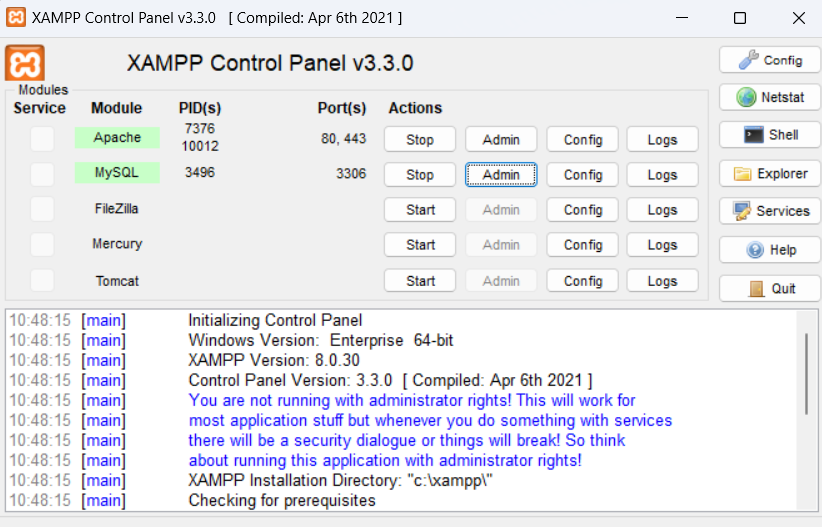
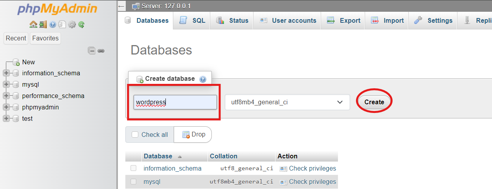

How to setup wordpress in localsystem in just 5 min
Wordpress is a software designed to make websites and webpages without coding . You can simply make a website with drag and drop features. This makes it easy for people who are not familiar with coding and other technical skills. In this article I will show you how to set up wordpress on your localhost and start your own project.
- Step 1: download wordpress
and xamp
from your browser.
Step 2: wait for download completion
Step 3 : run the installation of xampp and wait for full installation.
Step4: find your downloaded wordpress file on file manager and extract it.
Step 5: copy that folder
Step 6: Find the xampp folder inside your C drive.
Step 7: find htdocs folder inside xampp folder.
Step 8: paste the wordpress folder inside htdocs folder.

-
Step 9: now click on start on apache and MySql then click on my sql admin button or simply you can go to your browser and type ”localhost/phpmyadmin”
Now you are on phpmyadmin database control panel you can manage your database from here
- Step 10: now create a new database name with your desired name by clicking on new.

- Step 11: now click on create and you have successfully created database
Step 12: now go to your browser and type localhost/yourdatabase_name. For my case it is localhost/wordpress and hit enter.
- Step 13: Now you will redirect to the wordpress setup page where you have to fill in certain information to set up your wordpress site .First select the preferred language and click next.
Step 14: now you have to fill up certain information on it here is detail default information to fill
- Site title:wordpress
username : root (default)
Password: root
Email: choose your preferred email
- Step 15: After installation you will redirect to login page where you have to enter your username and password to acess your wordpress dashboard. Fill up the information and hit enter.
- conragtulations now you have acess to your wordpress dasboard now you can start your website design . something to remember :
- 1. You have to start your mysql and apache server before you going to login in your dasboard.
2. url to be remembred : localhost/phpmyadmin to acess a phpmyadmin and your localhost site url in my case it is localhost/wordpress.
This was the complete procedures to install wordpress in your local system. Where you can design your sites and later host it online . this is best way to make your wordpress site for free your you don’t wanna pay. I will bring next tutorial to design the site and export it for hosting Thank you for reading !